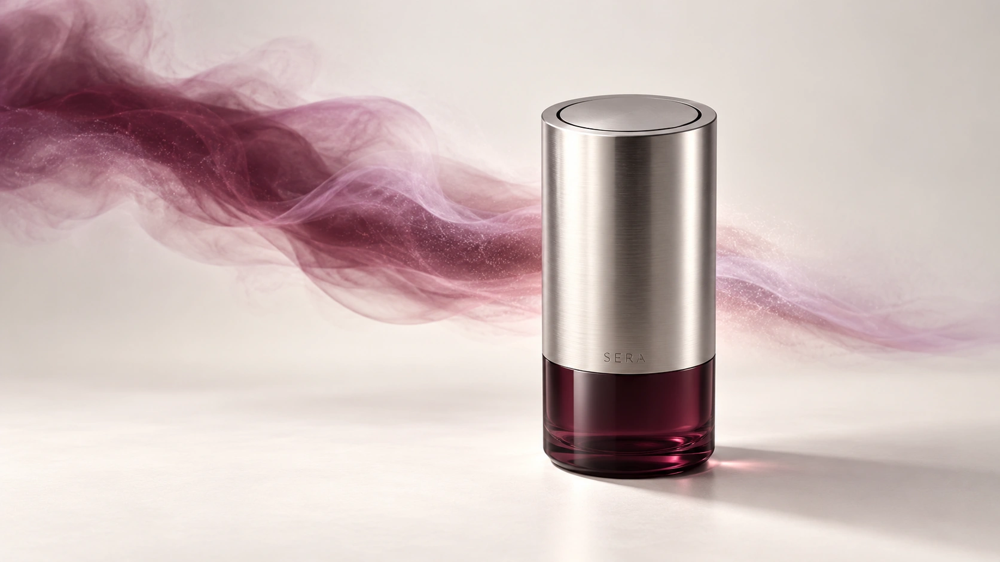
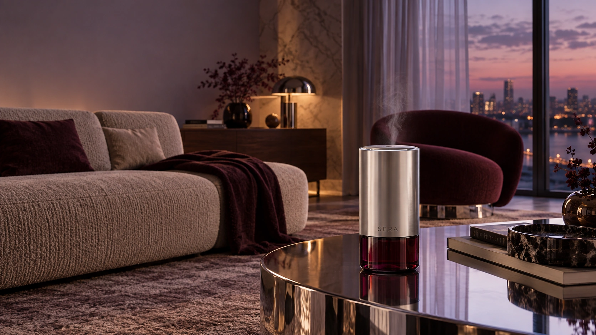
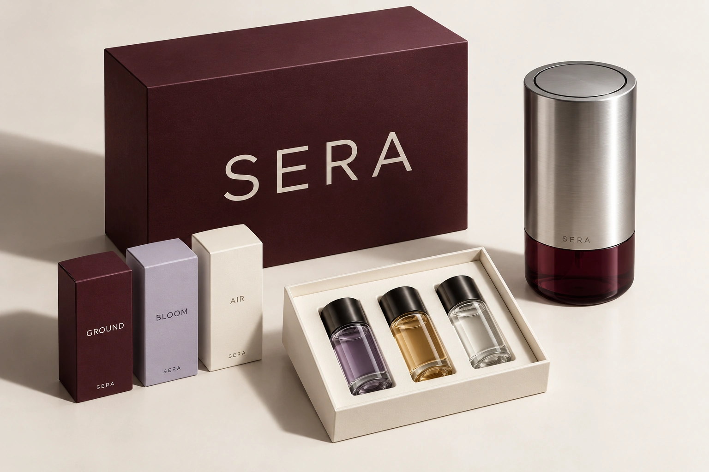

01 / WOODY
Ground↘
Cedar. Vetiver. Soft amber.
A warm foundation.Something to come back to.
THE ANCHOR

Some spaces help you focus. Others invite you to slow down. SERA lets you compose that feeling through scent.
Three complementary capsules. One quiet object. An atmosphere that moves with your day.

A sculptural cylinder that belongs on a shelf, a desk or a bedside table. Cool brushed metal meets translucent glass. Scent leaves through a single, delicate opening.
Brushed aluminum
A tactile, lasting surface
Smoked glass
A glimpse of what’s inside
Three capsule chamber
A complete scent palette
Each capsule has a character of its own. Together, they become a fragrance that feels like you.
Cedar. Vetiver. Soft amber.
A warm foundation.Bergamot. Tea. Rain.
A little clarity.Iris. Neroli. White musk.
A softer edge.Change a note. Keep the object.
Start with a moment. Make the blend your own. Give it a place in your day.
THE SERA COMPANION APPGood evening,
Sofia.
One room. One clear state.
A balance that feels like you.
A personal balance of three notes.
Small rituals. A better flow.
Clear mind. Fresh start.
40% · 45 minLet the day settle.
45% · 30 minA softer end to the day.
25% · 20 minA routine that quietly fits your day.
Cedar meets a fresh, open finish. A quiet floral note brings it all into balance.
A restrained wordmark and a palette drawn from the object itself. Warmth, translucency and a little contrast.
#32141C
#F3F0EB
#C5BED9
#171718
ABCDEFGHIJKLMNOPQRSTUVWXYZ
abcdefghijklmnopqrstuvwxyz
0123456789
A tactile box. A considered opening.
The beginning of a new daily ritual.

Black cherry paper.
A quiet, oversized wordmark.
A custom paper insert.
Everything in its place.
Individual capsules.
A new note, whenever you need it.
Mood presets give you a natural starting point. No fragrance knowledge required.
Three notes, visible proportions and a single intensity control. You always know what you’re creating.
Save a favourite blend and place it in your day. A quiet ritual, ready when you are.